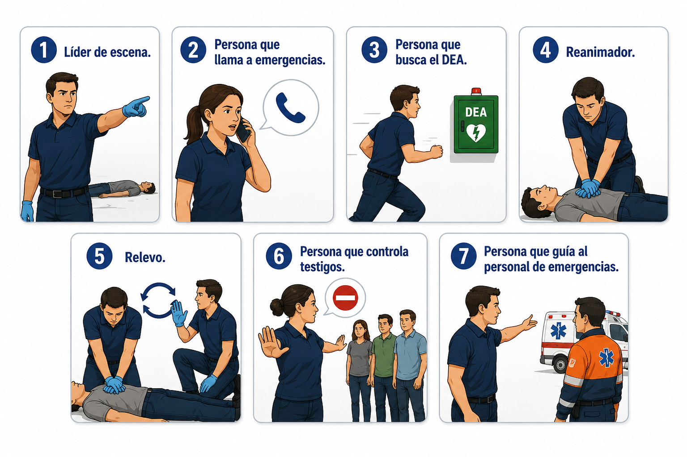

21 · Coordinación
Comunicación y trabajo en equipo
Durante una emergencia, la comunicación clara ayuda a organizar la respuesta y evita confusión.
El primer respondiente debe dar instrucciones directas y específicas.
Genérico · nadie se siente responsable · todos asumen que otro lo hará.
También debe identificar si hay otra persona entrenada para coordinar relevos durante las compresiones.
Distribución de tareas
Roles durante la atención

Recuerda
Las órdenes deben ser claras, directas y dirigidas a una persona específica.
Practica
Ensaya tres órdenes claras para una escena con varios testigos.